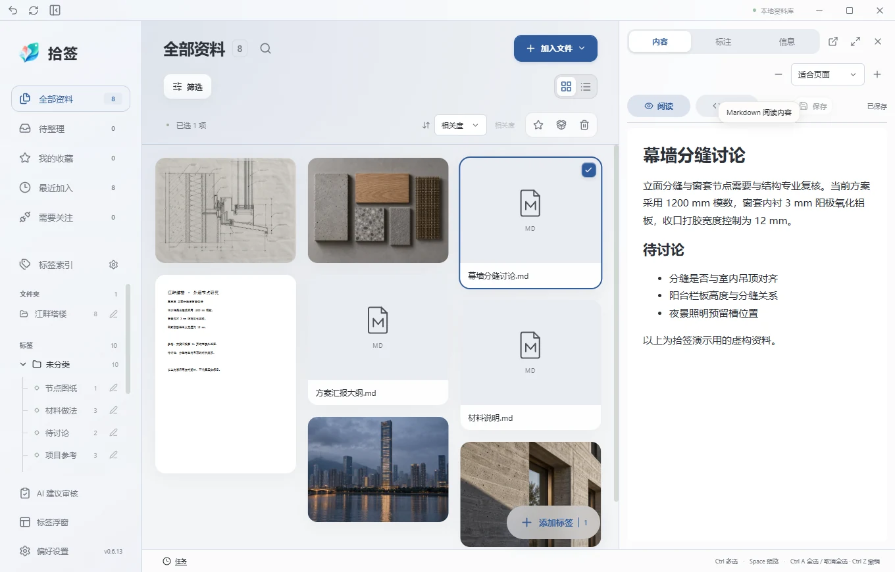
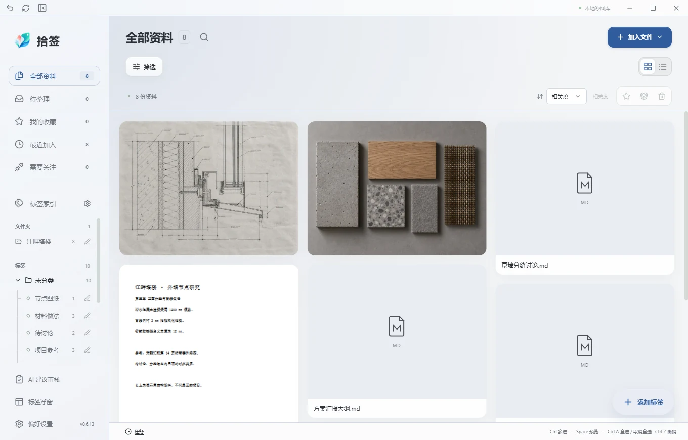
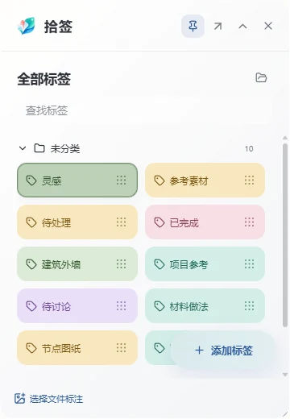
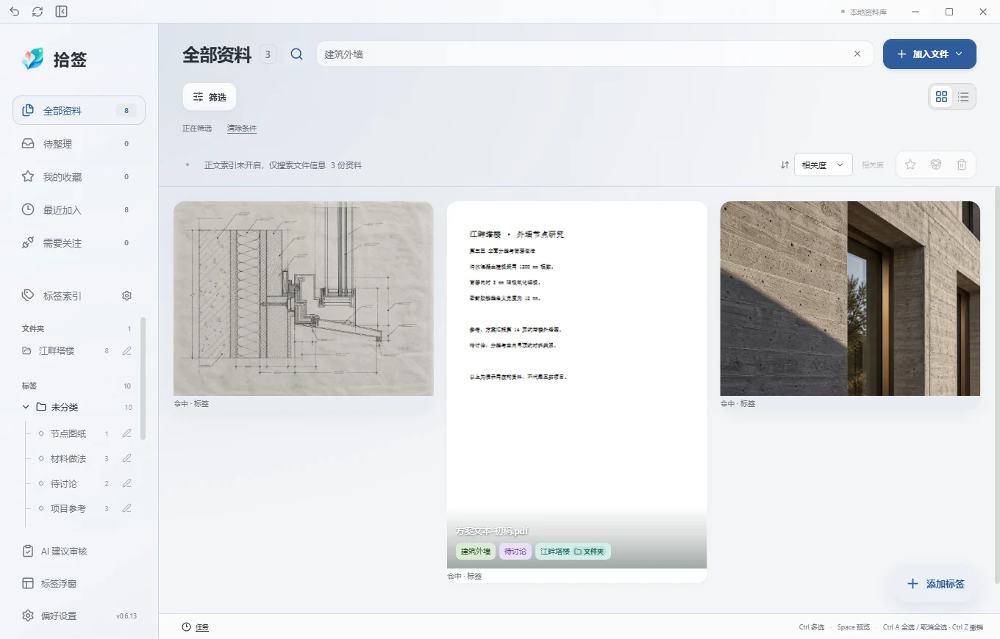
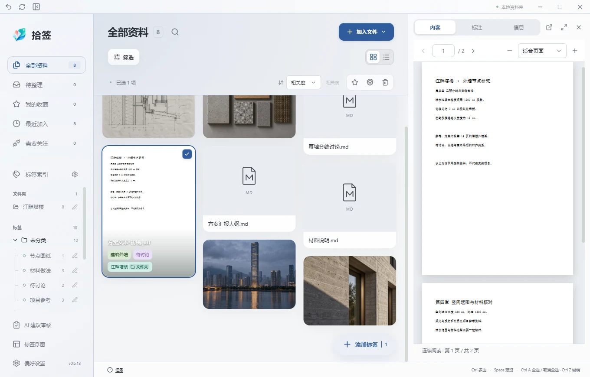
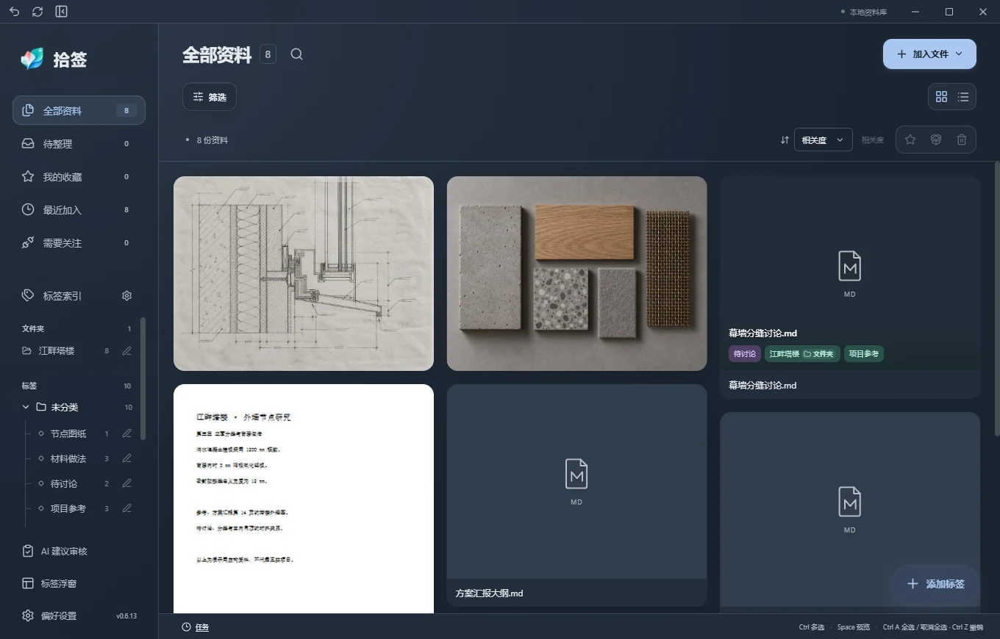

顺手贴上标签，
随时找回资料。
把文件、图片和网页参考联系起来。原件留在原处，需要时找回真正用得上的资料。
原件留在原处，无需搬动已验证 Windows 11 x64本地资料库，无需账号
动手贴一枚标签，试试看。
互动演示1. 选一枚标签。 2. 拖到资料上，或点一下卡片贴上标签。

PDF
方案文本-初稿.pdf
52.3 MB · 2024 年 10 月 12 日

选择标签查看匹配的资料，再点击卡片贴上标签。
资料为示意内容；同一份文件，可以同时属于多个标签。
文件不搬家，标签把它们联系起来。
一张效果图可以同时属于「项目参考」「建筑外墙」和「待讨论」。图片、PDF 与网页摘录可以出现在同一组搜索结果中，不必为了分类反复复制文件。
01
原件留在原处
加入资料库时，原件通常留在原来的路径。你继续用熟悉的工具编辑，拾签负责记录标签与来源。原件移动后，重新关联即可。
02
一份文件，多个标签
普通标签与文件夹自动标签分开管理，支持别名、颜色、合并与重命名同步。按住 Ctrl 点击多选，即可批量贴上标签。
03
看得见命中依据
名称、标签、别名、备注和已索引正文一起参与检索。每条结果都会显示命中位置，让你知道它为什么被找到。

从收进来，到用得上。
收集、标注、查找、阅读与分享，把散落在文件夹、硬盘和浏览器标签页里的参考资料接起来。
先看到内容，再看文件名。
图片、PDF 与网页资料混排在同一面资料墙上。列数、侧栏和详情宽度都能调整，收藏、备注与来源信息就在手边。
- 瀑布流与列表两种布局；Ctrl＋滚轮调整列数。
- 点击文件展开右侧详情，再次点击收拢。
- 待整理、我的收藏、最近加入与需要关注，均有分组入口。

在工作区打开一份参考资料悬浮播放 · 移出重置
小小标签浮窗，整理更顺手。
把标签留在置顶的桌面浮窗里。展开分类、搜索，用手柄排序或跨分类整理。把标签拖到文件上，也可以把一批文件拖到标签上。
- 普通标签、文件夹标签与 AI 建议分开显示。
- 顶部可收起为标题栏，也可控制是否置顶。
- 查看最近三步操作；Ctrl＋Z 撤销支持的上一步。

在标签浮窗中搜索标签悬浮播放 · 移出重置
记得多少，就搜多少。
名称、标签、别名、备注和已索引正文一起参与搜索。可选的语义结果作为补充，每条结果都说明它为什么出现。
- Ctrl＋F 打开搜索，命中片段会标出位置。
- 类型、状态、包含或排除标签、目录与日期可组合保存为集合。
- 不支持、损坏、加密或超限的文件有明确状态；扫描件暂不自动 OCR。

通过标签找回参考资料悬浮播放 · 移出重置
浏览器里看到好的，顺手收进来。
Chrome 与 Edge 扩展可以保存网页、选中文字和图片。先预览、再选标签、后入库；在线阅读或保留采集副本，来源地址始终可追溯。
- 通过工具栏保存整页，也可右键保存链接、摘录或图片。
- 桌面程序离线时，采集内容留在队列中等待入库。
- 失败时可查看环节、错误码与脱敏诊断；不读取浏览器 Cookie。
从浏览器，到本地资料库流程示意
-
01
留下有用的部分
整张网页、选中的段落，或一张图片。
网页摘录建筑外墙如何回应城市街道“留给下一次方案讨论的一段参考……”
保留来源地址 -
02
补上用途与背景
预览采集内容，选上合适的标签。
-
03
和本地文件一起找回
保存到正在运行的桌面程序；暂时无法连接时，先留在采集队列里。
网页采集流程示意。当前浏览器扩展使用中文界面。
不用换软件，先看清它。
图片围绕鼠标位置缩放；PDF 连续阅读并支持文字层选取；Markdown 可写回原文件。本地 HTML 可查看静态内容或源码，Office 文档可借助本机 Microsoft Office 或 WPS 显示原排版。
- 拖动调整详情宽度，在内容、标注和信息页签之间切换。
- 阅读 DOCX、XLSX、CSV 等受支持内容，必要时使用内容预览。
- 扫描件没有文字层时会明确说明；看到预览不代表已经 OCR。

连续滚动阅读 PDF悬浮播放 · 移出重置
本地整理完整，AI 按需开启。
AI 标注与语义检索是两个独立的可选服务。建议经你审核后才成为普通标签，语义检索需要 Embeddings 模型。开启前核对服务地址、模型、密钥与发送范围：分析内容会发送到你配置的服务，可能计费。
- 采集时已手动选过标签的内容，不再自动提交 AI 标注。
- 为新导入文件生成语义向量，仍需确认。
- 操作记录与识别任务分开查看。
清水混凝土采纳
竖向遮阳采纳
夜景拒绝
界面示意，非真实模型输出。
交给同事，也交清楚背景。
交接的不只是文件。导出含原件的资料包，让同事在另一台电脑导入标签、备注、来源和原来的组织方式。
01 · 你的电脑
选中文件，导出资料包
核对范围与数量，再决定是否包含原件。
02 · 发送
把资料包发给同事
通过你们已经在用的可靠渠道发送压缩包。
03 · 同事的电脑
安装后导入
同名冲突会提示处理，不会静默覆盖现有资料。
04 · 核对
一起检查交接结果
核对文件夹、数量与标签，再确认原件能够打开。
| 交付内容 | 里面有什么 |
|---|---|
| 程序或安装包 | 安装拾签，不包含你的文件与资料库。 |
| 标注备份 | 恢复资料库信息；普通原文件不在其中。 |
| 含原件资料包 | 跨电脑交接文件、标签和备注等信息，导入时保留原来的父文件夹分组。 |
留一点空间，给自己的偏好。
12 种主题色、浅色与深色模式、可调整字号，以及中英双语。默认主题色为群青；切换主题时，个人标签配色仍会保留。
中文／English · 浅色／深色 · 字号可调

安装前，先把这些说清楚。
当前版本仍有一些实际边界。在自己或同事的电脑上安装前，请先了解。
!已验证 Windows 11 x64。Windows 10 尚未完成同等实机验证，不提供 macOS 或 Linux 安装包。
!本版未做商业代码签名，Windows 可能显示未知发布者提示。运行需要 WebView2，安装过程可能需要联网。
!暂未实现实时云同步。不要通过网盘文件夹并发使用活跃的 SQLite／WAL 资料库。
!独立 EXE 可以直接运行，但仍使用当前用户的资料库，并非把资料存放在 EXE 旁边的便携资料库。
!浏览器扩展目前需要通过开发者模式手动加载，界面为中文，使用时桌面程序必须保持运行。
!扫描件暂不自动 OCR，PPTX 与图片文字不在正文索引范围内。升级前请先导出标注备份。
从下一份参考资料开始。
下载 v0.6.12，附 SHA256 校验文件。升级前导出标注备份，重要原件另行备份；完全退出旧版后再安装。